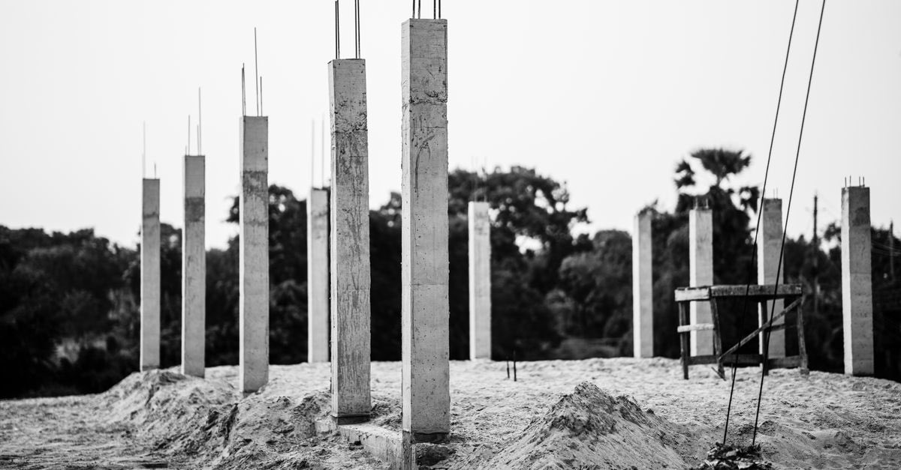

Dava yolları
Müteahhidin sorumluluğu: ağır kusur varsa zamanaşımı 20 yıl
Binanın depremde yıkılması hukuken ayıplı ifadır. Taşınmaz yapılarda zamanaşımı beş yıl, yüklenicinin ağır kusuru varsa yirmi yıldır.
· ~4 dakika okuma · T8 Hasar Tespiti · Claude Impact Lab

Deprem hukukunda en çok sorulan soru şudur: "Müteahhide dava açabilir miyim, süresi geçmiş mi?" Cevap çoğu kişinin sandığından daha umut vericidir — ama abartılı beklenti kurmak da doğru değildir.
Binanın yıkılması hukuken ayıplı ifadır
Yüklenicinin temel borcu, yapıyı sözleşmeye, imar mevzuatına ve deprem yönetmeliğine uygun, eksiksiz ve ayıpsız teslim etmektir. Hukuken bir binanın depremde yıkılması ayıplı ifa sayılır.
Açık ayıp / gizli ayıp ayrımı: Açık ayıp teslim anında basit incelemeyle görülebilen, gizli ayıp ise sonradan kullanım veya dış etkenle (deprem gibi) ortaya çıkan ayıptır. Depremde yıkılan binalardaki ayıplar hemen her zaman gizli ayıptır.
Zamanaşımı: 5 yıl mı, 20 yıl mı?
| Durum | Süre (teslimden itibaren) |
|---|---|
| Taşınmaz yapı dışındaki eserler | 2 yıl |
| Taşınmaz yapılar | 5 yıl |
| Yüklenicinin ağır kusuru varsa | 20 yıl |
Deprem davalarının neredeyse tamamı 20 yıllık süreye dayanır, çünkü beş yıllık süre çoğu binada çoktan dolmuştur. Ayıbın hile ile gizlenmiş olması hâlinde de sürenin uzadığı kabul edilir.
Ağır kusur örnekleri
- Statik projeden sapma
- Demir eksiltme — projede öngörülen donatının konmaması
- Beton sınıfını düşürme — düşük dayanımlı beton kullanımı
- Kolon kesme ve taşıyıcı sisteme müdahale
- Ruhsat ve projeye aykırı kat ilavesi
Bu iddiaların ispatı teknik incelemeyle olur: enkaz numuneleri, beton karot sonuçları, projeler ve yapı denetim kayıtları. Bu yüzden enkaz kaldırılmadan önce numune ve belge toplanması davanın kaderini belirler.
Cezai sorumluluk
| Suç / kurum | Madde | İçerik |
|---|---|---|
| Taksirle ölüme neden olma | TCK m.85/1 | 2 yıldan 6 yıla kadar hapis |
| Birden fazla ölüm veya ölüm + yaralanma | TCK m.85/2 | 2 yıldan 15 yıla kadar hapis |
| Bilinçli taksir | TCK m.22/3 | Ceza üçte birden yarısına kadar artırılır |
| İmar kirliliğine neden olma | TCK m.184 | Ruhsatsız veya ruhsata aykırı yapı |
| Dava zamanaşımı | TCK m.66 | İlgili suçlar için on beş yıl olarak belirtilmektedir |
Ceza zamanaşımının başlangıç anı (inşaatın tamamlanması mı, yıkımın gerçekleşmesi mi) doktrinde tartışmalıdır. Bu, davanın kaderini belirleyen bir noktadır ve tartışmalı olduğu bilinerek değerlendirilmelidir.
Uygulamada ne oluyor? Dürüst tablo
Bir bilgilendirme metninin en zor sorusu şudur: "Dava açsam ne olur?" 2023 depremlerine ilişkin yargılamalardan aktarılan örnekler:
- 148 kişinin öldüğü bir sitede müteahhide 21 yıl hapis — bilinçli taksirle birden fazla kişinin ölümüne ve yaralanmasına neden olma.
- 123 kişinin öldüğü bir blokta müteahhide 17 yıl 4 ay; iki belediye görevlisine ayrı ayrı hapis cezaları.
- Bir başka dosyada müteahhit ve fennî mesule 21 yıl 9 ay.
Bu tablodan üç çıkarım yapılabilir:
- Uygulama "bilinçli taksir" üzerinden ilerliyor. Mahkemeler TCK m.85/2 ile m.22/3'ü birlikte uyguluyor; doktrindeki "olası kast" tartışması pratikte henüz baskın hâle gelmiş değil.
- Kamu görevlileri de mahkûm olabiliyor. Sorumluluk yalnızca müteahhitle sınırlı kalmıyor.
- Süreç yavaş ve bilirkişiye bağımlı. Dosyaların bir kısmı yıllar sonra hâlâ rapor bekliyor.
Dürüstlük notu: Verilen cezaların ölü sayısına oranı kamuoyunda ağır biçimde eleştirilmiştir. Bu yazı, dava açmanın hızlı ve kesin bir sonuç getireceği izlenimi vermez. Yanlış umut vermek, bilgi vermemekten daha zararlıdır. Yukarıdaki örnekler haber kaynaklıdır ve kesinleşme durumları ayrıca kontrol edilmelidir.
Kim dava açabilir?
Tazminat davasında mülkiyet şartı yoktur. Malik, hissedar, kiracı ve ölenin yakınları kendi zararları için dava açabilir. Ceza yargılamasında zarar görenler katılan sıfatını alabilir.
Kiracıya özel ayrıntı: kiracının deprem hakları.
Dava öncesi hazırlık listesi
- Yapı ruhsatı, yapı kullanma izin belgesi (iskân), zemin etüdü ve yapı denetim raporlarını isteyin — bilgi edinme başvurusuyla mümkündür. Nasıl alınır?
- Enkazdan numune ve fotoğraf: kaldırma çalışmaları başlamadan önce.
- Binanın yapım yılı ve hangi deprem yönetmeliği döneminde inşa edildiği.
- Sözleşmeler, tapu, kira sözleşmesi ve ödeme belgeleri.
- Bir avukatla çalışın; ücret ödeyemiyorsanız barosunun adli yardım birimine başvurun.
Müteahhit bulunamıyorsa veya şirket kapanmışsa
Deprem davalarının pratikteki en büyük sorunlarından biri budur: binayı yapan kişi vefat etmiş, şirket tasfiye edilmiş ya da mal varlığı kalmamış olabilir. Böyle hâllerde bakılacak başlıklar:
- Mirasçılar. Vefat eden yüklenicinin borçları mirasçılarına geçebilir; mirası reddetmişlerse durum değişir.
- Şirket ortakları ve yöneticileri. Şirket türüne ve olayın niteliğine göre kişisel sorumluluk gündeme gelebilir.
- Diğer sorumlular. Proje müellifi, fennî mesul, yapı denetim kuruluşu ve ilgili idare ayrı ayrı dava edilebilir — idare ve yapı denetimi sorumluluğu.
- Ceza dosyası. Yürüyen bir ceza soruşturması varsa, toplanan deliller tazminat davanız için de değerlidir.
Sorumlulardan yalnızca birine dava açmak zorunda değilsiniz. Hangi tarafların dava edileceği, dosyanın belgelerine göre avukatınızla birlikte belirlenmelidir.
Sık sorulan sorular
Müteahhit depremde yıkılan binadan kaç yıl sorumludur?
Taşınmaz yapılarda zamanaşımı teslimden itibaren beş yıldır. Ancak yüklenicinin ağır kusuru varsa bu süre, eserin niteliğine bakılmaksızın yirmi yıla çıkar. Deprem davalarının neredeyse tamamı bu yirmi yıllık süreye dayanır.
Ağır kusur nedir?
Statik projeden sapma, demir eksiltme, beton sınıfını düşürme ve kolon kesme gibi davranışlar ağır kusur örnekleri olarak sayılmaktadır. Ayıbın hile ile gizlenmesi hâlinde de sürenin yirmi yıla uzadığı kabul edilir.
Binanın depremde yıkılması ayıplı ifa mıdır?
Yüklenicinin temel borcu yapıyı sözleşmeye, imar mevzuatına ve deprem yönetmeliğine uygun, eksiksiz ve ayıpsız teslim etmektir. Hukuken bir binanın depremde yıkılması ayıplı ifa sayılır.
Müteahhide hapis cezası verilir mi?
Taksirle bir kişinin ölümüne neden olma için iki yıldan altı yıla kadar, birden fazla ölüm veya ölümle birlikte yaralanma hâlinde iki yıldan on beş yıla kadar hapis öngörülmüştür. Bilinçli taksir hâlinde ceza üçte birden yarısına kadar artırılır.
Kiracı da müteahhide dava açabilir mi?
Evet. Haksız fiile dayalı tazminat davasında mülkiyet şartı aranmaz; kiracı kendi eşya zararı, bedeni zararı ve yakınının ölümü nedeniyle dava açabilir.
Hangi kanuna dayanıyor?
Bu yazıdaki bilgilerin dayandığı düzenlemeler:
- 6098 sayılı Türk Borçlar Kanunu m.474-478 — eser sözleşmesi, ayıp ve zamanaşımı
- 5237 sayılı Türk Ceza Kanunu m.85 — taksirle öldürme
- 5237 sayılı Türk Ceza Kanunu m.22/3 — bilinçli taksir
- 5237 sayılı Türk Ceza Kanunu m.66 — dava zamanaşımı
- 5237 sayılı Türk Ceza Kanunu m.184 — imar kirliliğine neden olma
- Haklarım — malik veya kiracı olarak dava haklarınızı görün
- Süre takvimi — zamanaşımı sürelerinizi takvime dökün